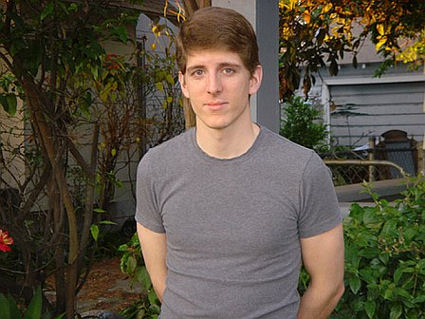

Некоторые связывают депрессию с неудачной операцией lasik - The News &Observer 2/3/2008
Из статьи: Разочарование и даже печаль могут последовать за любой неудачной операцией, но когда в результате процедуры пациент остается с непрекращающейся болью в глазах или постоянным ухудшением зрения, эмоциональный ущерб может быть особенно тяжелым. Одним из тех, кто не смог этого вынести, был 28-летний Колин Дорриан, патентный юрист и начинающий студент-медик из пригорода Филадельфии. Прошлым летом он покончил с собой, спустя 6 с половиной лет после операции lasik, в результате которой у него остались стойкие нарушения зрения. Операция была проведена в канадском центре lasik, который с тех пор закрылся. "Если я не смогу вылечить свои глаза, я покончу с собой", - написал он в записке, которую полиция нашла на его теле. "Я просто не могу смириться с тем фактом, что я должен так жить". В записке Дорриан написал, что были и другие случаи, когда он чувствовал себя подавленным. "У меня есть другие проблемы, как и у большинства людей. Но это нечто другое", - написал он. "Как только у меня испортилось зрение, я впал в более глубокую депрессию, чем когда-либо испытывал, и так по-настоящему и не вышел из нее".
25 апреля 2008 года: Джерри Дорриан, отец Колина Дорриана, дает показания на слушаниях FDA по LASIK
Опасности Lasik: Двоение в глазах, боль в глазах и даже самоубийство - Юристы и урегулирование споров 28.04.2008
Из статьи: Колин Дорриан был многообещающим студентом юридической школы, когда решил избавиться от хронической сухости глаз, сделав лазерную операцию на глазу Lasik. Однако вместо того, чтобы улучшить его зрение и избавиться от контактных линз, процедура вызвала у него такую сильную боль в глазах и помутнение зрения, что через шесть лет он покончил с собой... Дорриан, который покончил с собой через шесть лет после операции Lasik, должен был быть отстранен от операции. Его зрачки были чрезмерно большими, и он страдал от чрезмерной сухости глаз - два состояния, которые должны были лишить его права на проведение процедуры. И все же он был допущен к этому.
Мужчина из Хаверфорда найден мертвым на территории старой больницы - Delaware County Daily Times, 7/6/2007
Автор: Лоис Пульонези, корреспондент Times
ХАВЕРФОРД - Поиски 28-летнего Колина Дорриана трагически завершились в среду, когда полиция обнаружила его тело на территории бывшей государственной больницы Хаверфорда около 8 часов вечера.
Судебно-медицинский эксперт округа Делавэр установил, что Дориан выстрелил себе в грудь на территории больницы в неустановленную дату и время.
28-летний Дорриан пропал 25 июня. Его семья опасалась худшего, узнав, что в день исчезновения он использовал свою кредитную карту для покупки оружия.
Друзья, прочесывавшие местность в среду, заметили красный пикап Дорриана Ford Ranger, припаркованный во дворе, и заподозрили, что он перепрыгнул через забор, возвращаясь в старое место, где они часто бывали подростками. По словам лейтенанта Марка Харниша, полиция городка Хаверфорд обнаружила тело Дорриана в высокой траве на территории штата Хаверфорд с помощью служебной собаки.
Доррианы прожили в Хавертауне 23 года, прежде чем переехать в Эйвондейл в 2004 году.
Дорриан окончил Хаверфордскую среднюю школу, изучал инженерное дело в Cooper Union и закончил юридический факультет Мичиганского университета. В течение двух лет он практиковал патентное право в Лос-Анджелесе, но остался неудовлетворенным и решил заняться медицинской карьерой. Дорриан недавно закончил подготовительный курс в Университете Дрексел и получил высокие баллы на вступительных экзаменах в медицинский колледж. Друзья сказали, что он собирается подавать документы в медицинские учебные заведения.
Отец Дориана, Джерри Дориан, считает, что его сына довели до самоубийства осложнения после операции на глазу LASIK, которую он перенес в 2001 году. Врачи сказали Дорриану, что он не самый лучший кандидат, но он все равно прошел процедуру.
В то время как многие пациенты добиваются удовлетворительных результатов, Дорриан после операции начал испытывать изнурительные нарушения зрения, такие как яркий свет, двоение в глазах или призрачность, затуманенное зрение, ореолы вокруг глаз, а также ухудшение зрения в ночное время и при слабом освещении.
Джерри Дориан сказал, что его сын консультировался со многими специалистами и внимательно следил за развитием технологий, надеясь на прорыв, который мог бы обратить вспять нанесенный ущерб. Колин покончил с собой, придя к выводу, что "этого не произойдет", - сказал Джерри Дорриан.
По словам Джерри Дорриана, Колин оставил на своем компьютере сообщение о том, что покончит с собой, если ему не исправят зрение.
"В жизни Колина не происходило ничего такого, что могло бы подтолкнуть его к этому", - сказал Джерри Дорриан. “Для некоторых людей результат LASIK может оказаться непоправимым.”
"Колин был очень щедрым человеком", - сказал Грег Бенсон, житель Хавертауна и друг семьи, который знал Дорриана с детства. Дорриан помогал сыну Бенсона готовиться к экзаменам.
Один из соседей Колина по комнате, Питер Литт, описал Дорриана как умного, способного и готового решать сложные задачи. Литт отметил, что Дорриан казался усталым и напряженным, когда он видел его в последний раз.
"Колин был ярким, динамичным и обаятельным человеком", - сказал Джерри Дорриан. "Он был из тех людей, которые могли зайти в комнату и преобразить ее".;